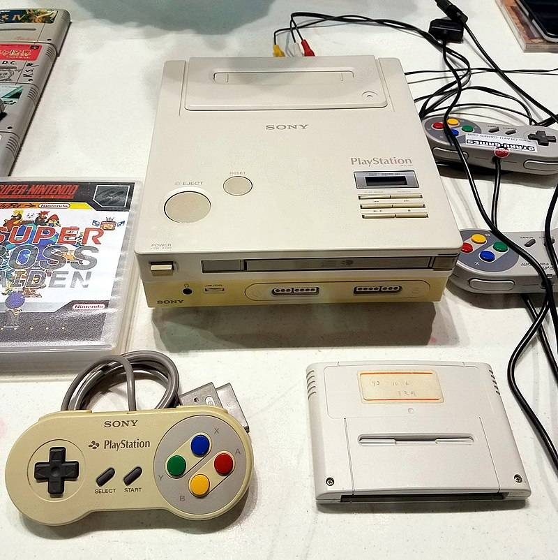
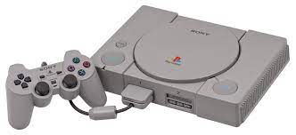
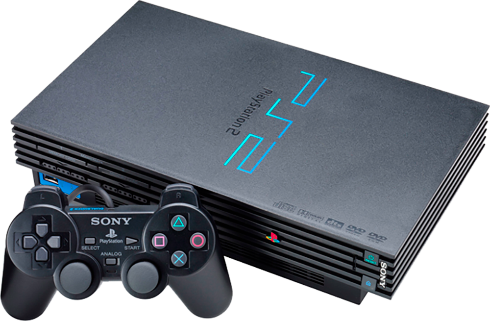
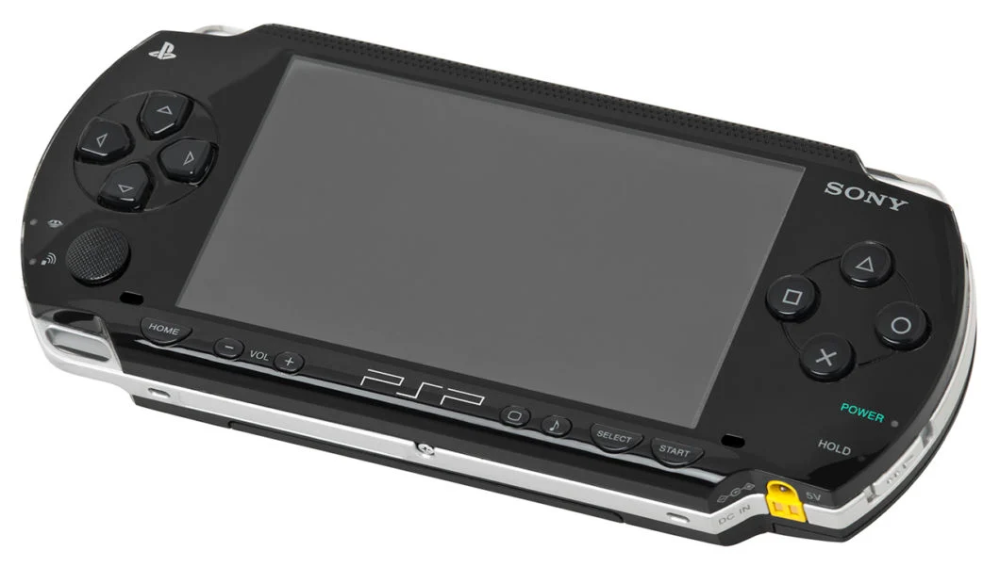
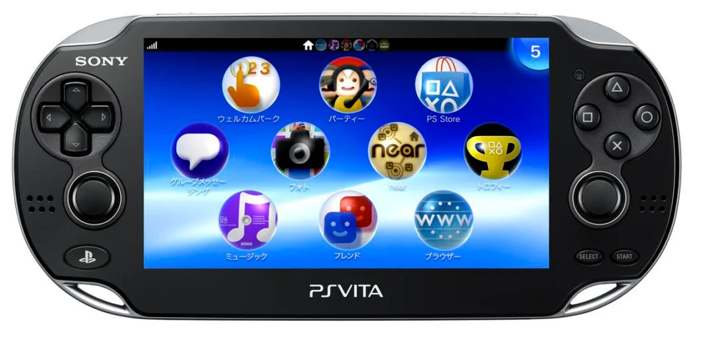
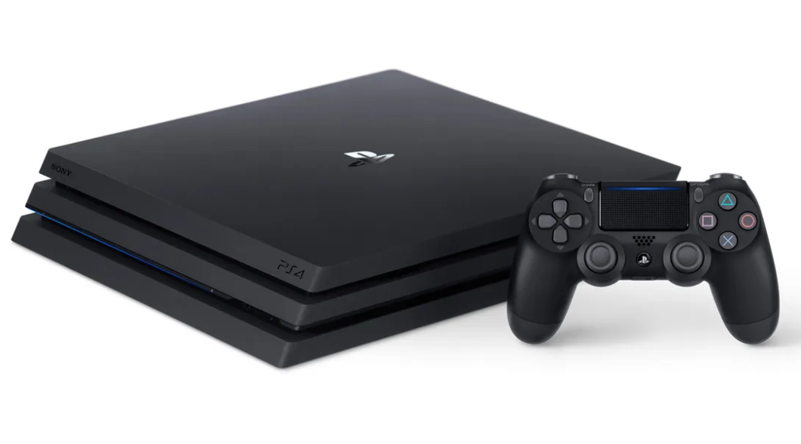
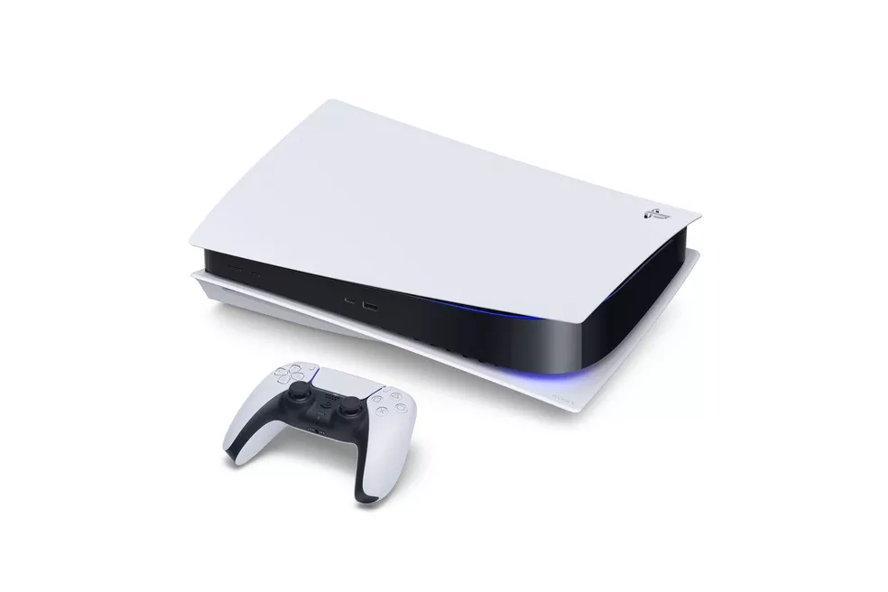

O Começo
Foi o começo de um relacionamento entre as duas empresas, que logo estreitaram os laços num projeto mais ambicioso. A Nintendo pediu à Sony que desenvolvesse o SNES-CD, um leitor de CD-ROM para o Super Nintendo. Fazia sentido. Como co-inventora do Compact Disc, a Sony dominava o formato. E havia uma corrida para levar os consoles de 16 bits à era do CD-ROM (a Sega estava desenvolvendo seu produto do tipo, o Sega CD, para o Mega Drive/Genesis; e a NEC já tinha um console, o PC Engine, com leitor de CD). A Sony desenvolveu um protótipo, que combinava o hardware e os joysticks do Super NES com um leitor de CD, e se chamava “PlayStation”. Ele aceitava os cartuchos do SNES, e também jogos em CD – na verdade, era um CD levemente modificado, que foi batizado de “Super Disc”. Pelos termos do acordo, a Sony permanecia dona da tecnologia envolvida no Super Disc. Isso incomodo a Nintendo, que costumava controlar com mão de ferro o hardware e o software de suas plataformas (ela ficou famosa por, através do chip CIC, determinar quais games poderiam ou não ser lançados para o NES de 8 bits)
Em junho de 1991, durante a Consumer Electronics Show (a maior feira de tecnologia do mundo na época), a Sony revelou ao mundo o PlayStation, como ele era até então: só um Super Nintendo com leitor de CD. No dia seguinte, a Nintendo detonou uma bomba. Anunciou que estava rompendo com a Sony, e que iria se associar à Philips para desenvolver um leitor de CD-ROM para o Super NES. Descontente com o contrato que havia assinado com a Sony, a Nintendo vinha fazendo reuniões secretas com os holandeses da Philips (que haviam desenvolvido o Compact Disc junto com a Sony). Isso reescreveu a história. Surpresa e enfurecida, a Sony decidiu entrar com tudo no mercado de games. Manteve o nome, mas projetou um console completamente novo – e revolucionário.
O primeiro PlayStation, lançado em dezembro de 1994, levou os videogames domésticos para a era dos gráficos poligonais, 3D (isso até já havia sido tentado com o console 3DO, que foi lançado em 1993 e fracassou pois era fraco, caro e tinha poucos games). Potente, acessível e sustentado por uma enorme campanha de marketing, o PS1 foi um megasucesso: o primeiro console, na história, a ultrapassar a marca de 100 milhões de unidades vendidas. Ken Kutaragi se tornou presidente da Sony Computer Entertainment, o braço de games da empresa, cargo no qual ficou até 2011.
Jogos vendidos
O jogo eletrônico mais vendido de todos os tempos para o primeiro PlayStation é Gran Turismo, um jogo de corrida desenvolvido pela Polyphony Digital. Gran Turismo foi originalmente lançado no Japão em 23 de dezembro de 1997 e vendeu 10,85 milhões de cópias em todo o mundo.O segundo jogo da série, Gran Turismo 2, de 1999, vendeu 9,37 milhões de unidades e se tornou o terceiro jogo de PlayStation mais vendido de todos os tempos.O segundo título mais vendido no console é Final Fantasy VII, que vendeu aproximadamente 10 milhões de unidades.Tekken 3 é o quarto jogo de PlayStation mais vendido, com mais de 8,3 milhões de unidades vendidas,enquanto Harry Potter and the Philosopher's Stone é o quinto.
Um total de 113 jogos de PlayStation venderam um milhão de unidades ou mais. Desses, 41 títulos foram publicados em um ou mais territórios pela Sony Computer Entertainment (SCEI).
Futuras Gerações
PS2
O PlayStation 2 chega no ano 2000 e deu um salto de evolução em relação ao PSOne. Com visuais em 3D de melhor definição, o PS2 trouxe a possibilidade de se jogar online e um driver de DVD integrado, ou seja, além dos jogos agora também era possível curtir filmes num mesmo aparelho. E junto com o novo console, veio um novo controle que apresenta dois analógicos(no PS1 ele tinha somente um analógico) que se chama DualShock 2. 
O PS2 vendeu mais de 155 milhões de unidades ao redor do mundo(opinião:esse console é o queridinho de todo brasileiro né?), e se tornando o console mais vendido da história. foram quase 4 mil jogos lançandos para o console.
PSP
O PSP(ou PlayStation Portable) foi o primeiro console portátil da Sony a ser lançado e que fez mais sucesso. Foi lançado em 2004, no Japão, e em 2005, nos EUA e Europa, o PSP permitia não só jogar, mas também de assistir vídeos, ouvir músicas e navegar na internet.
O portátil durou 10 anos de comercialização, um deles foi o PSP GO, de 2009( esse portátil foi um fiasco, por causa dele a Sony lançou o PSP versão 3010, que por sua vez foi um sucesso).o console foi descontinuado em 2014, no Japão, EUA e Europa e 2015 no Brasil.
PS3
O PS3 foi lançando em 2006, no Japão e EUA, e em 2007, na Europa, ele foi o primeiro console da empresa a sair do DVD para o Blu-Ray. Também o console não só teve a invocão do Blue-Ray, mas também a plataforma estreou o DualShock 3 que era capaz de dar retorno vibratório das ações nos jogos.
O console trouxe umn sistema online aprimorado, e também marcou a estreia da PlayStation Network e da PlayStation Store.A chegada da PSN introduziu uma nova interface de usuário que permitia jogar online, acessar música, vídeos, TV, se comunicar e etc.Em 2010, para os donos do PS3 ganharam uma oportunidade assinar o PlayStaton Plus(uma assinatura mensal ou anual, que ao assinar vc terá a acesso a jogos de graça e promoções na PSN Plus).
- -Guilherme:uma pequena nota no PS3 que, ao ser lançado o console custava US$600, que por sua vez era muito caro e no Brasil chegou a custar R$ 6 mil reis. Depois disso a Sony reduziu o preço.
PS Vita
PS Vita(ou PlayStation Vita) chegou em 2011, no Japão, e em 2012, nos EUA,Europa e Brasil, ele tinha um objetivo: substituir, e ficar à altura e o sucesso do seu irmão mais velho PSP.
Mesmo o portátil sendo poderoso para a época, com tela OLED sensível ao toque, dois controles analógicos e um touch pad traseiro... Bem, o sucesso não foi muito quanto a Sony esperava.
O motivo foi que quando ele foi lançando, o PS4 já foi anunciado e o hype dos usuários cresceram, e o outro foi que ao passar dos anos a Sony foi abandonando o portátil.Mas ainda assim, quase 1.500 jogos foram lançados para o portátil até 2018( que foi o fim da fabricação do console). O PS Vita também tem o suporte ao Remote Play, sendo possivel jogar alguns jogos do PS3 e do PS4 nele(utilizando uma internet e também um PS3 ou PS4).
PS4
E falando no diabo, o famoso PS4, vindo da oitava geração de consoles e que deu um upgrade no próprio hardware. Lançado em 2013 nos EUA e Europa, e em 2014 no Japão, com um sistema poderoso e com suporte a HDR, trazendo cores mais vibrantes, e além disso ele vem com streaming integrado, recursos para mídias sociais com a possibilidade de compartilhar o gameplay e mais ( isso ajudou bastante aos criadores de conteúdo e aos que gostam de fazer gameplays nas plataformas de streaming)
o controle DualShock 4 ganhou um design novo( e lindo) e, além de ficar confortável de usar, também veio com uma barra luminosa na frente do controle e dependendo do modelo do controle ele vem com uma barra luminosa em cima do touch pad, e em cima do touch ele tem um touch pad que pode ser utilizados em jogos e também ele pode ser o seu SELECT, mini alto falante embutido, botão Share. Também foram feitas melhorias em seu giroscópio.
Tanto a PSN(PlayStation Network) quanto a PS Store também receberam upgrades. Em 2014, a Sony estreou um novo serviço em nuvem: o PlayStation Now. Com ele é possível ter aceeso a centenas de jogo do PS3 e PS4. Também é possível jogar no PC( windows) usando um DualShock 4. Por enquanto não tem no Brasil, mas o serviço de streaming tem nos EUA, alguns países da Europa e Ásia.
o console apresenta vários jogos exclusivos com histórias boas e lindas, com jogabilidade boas e com resoluções de se maravilhar.
PS5
Por fim, o mais aguardado(e caro) vindo da nona geração de consoles com o Ray tracing o PS5. O console foi lançado em 2020, e como já citei antes ele vem com o Ray tracing, suporte a 4K, HDR e até 120 quadros por segundo- se o jogo tiver o suporte, é óbvio.
O PS5 também acompanha uma saída em 8k, para quem tem o luxo de jogar com resolução de 4320p, e um SSD para o armazenamento- que promete carregamentos muito mais rápidos.
Ele vem com a retrocompatibilidade para a maioria dos jogos do PS4. O controle DualSense para o PS5 teve uma nova mudança no seu design e agora oferece feedback tátil imersivo, além de acompanhar gatilhos dinâmicos e adaptável e com um microfone integrado.O PS5 já vem com alguns jogos e remake, que no caso é o Demon's Souls e Spider-Man: Miles Morales e entre outros